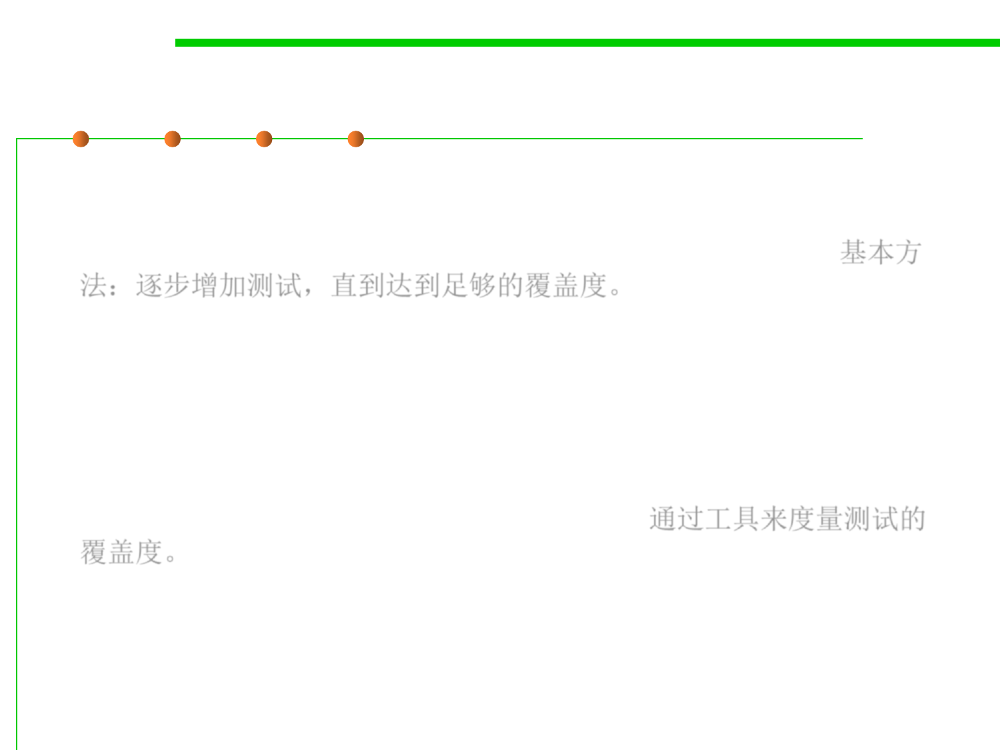

Code Coverage
7.5 Testing and Test-First Programming
▪ A standard approach to testing is to add tests until the test suite
achieves adequate statement coverage: i.e., so that every reachable
statement in the program is executed by at least one test case. 基本方
法：逐步增加测试，直到达到足够的覆盖度。
▪ In practice, statement coverage is usually measured by a code
coverage tool, which counts the number of times each statement is
run by your test suite.
▪ With such a tool, white box testing is easy; you just measure the
coverage of your black box tests, and add more test cases until all
important statements are logged as executed. 通过工具来度量测试的
覆盖度。